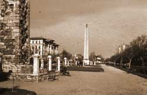
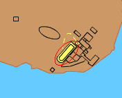

The Hippodrome
This was an arena where chariot racing took place, but it also housed other games and public meetings with the emperor. It is suggested that it could have held 100 000 people. There were four different groups or factions involved in the races, they were the Blues, Reds, Whites and Greens. The Blue and Green factions were the two that were most highly thought of in the hippodrome. Each of these provided a team for the races. The emperor was the chief patron, or supporter, of the racing. The building of the hippodrome was completed by Constantine but was rebuilt several more times.



The Hippodrome
